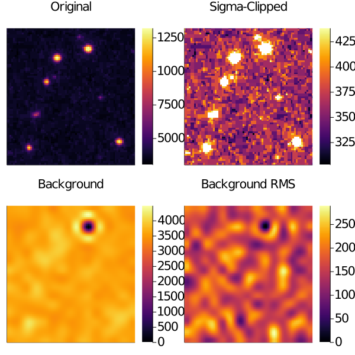
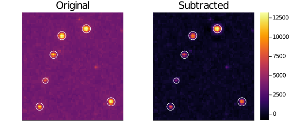

Examples
Plotting
We have recipes for all our aperture types, so you can easily create overlays on your images.
using Photometry
using Plots
plot(CircularAperture(2, 3, 4), c=1, xlims=(-1, 12), ylims=(0, 9))
plot!(CircularAnnulus(5, 5, 2.1, 3), c=2)
plot!(EllipticalAperture(0, 0, 10, 1, 32), c=3)
plot!(EllipticalAnnulus(5, 5, 4, 5, 2, -32), c=4)
plot!(RectangularAperture(0, 0, 4, 4, 4), c=5)
plot!(RectangularAnnulus(5, 1, 3, 4, 4, 4), c=6)Simple Stars
Here is an example where we will find aperture fluxes for stars from M67. The dataset is provided as part of the astropy/photutils-datasets repository.
Let's start by downloading and showing our image
using Photometry
using Plots
using FITSIO
# Load data in
hdu = FITS(download("https://github.com/astropy/photutils-datasets/raw/master/data/M6707HH.fits"))
image = read(hdu[1])'
chunk = image[71:150, 81:155]
# Plot
default(aspect_ratio=1, xlims=(1, size(chunk, 2)), ylims=(1, size(chunk, 1)))
heatmap(chunk)Now let's add some apertures!
positions = [
[47.5 , 67.5],
[29.5 , 62.5],
[23.5 , 48.5],
[17.5 , 29.5],
[13.25, 10.5],
[65.5 , 14.0]
]
radii = [3, 3, 2.7, 2, 2.7, 3]
aps = CircularAperture.(positions, radii)6-element Array{CircularAperture{Float64},1}:
CircularAperture(47.5, 67.5, r=3.0)
CircularAperture(29.5, 62.5, r=3.0)
CircularAperture(23.5, 48.5, r=2.7)
CircularAperture(17.5, 29.5, r=2.0)
CircularAperture(13.25, 10.5, r=2.7)
CircularAperture(65.5, 14.0, r=3.0)now let's plot them up
p = heatmap(chunk)
plot!.(aps, c=:white)
pand finally let's get our output table for the photometry
table = aperture_photometry(aps, chunk)| xcenter | ycenter | aperture_sum | |
|---|---|---|---|
| Float64 | Float64 | Float64 | |
| 1 | 47.5 | 67.5 | 248267.0 |
| 2 | 29.5 | 62.5 | 225989.0 |
| 3 | 23.5 | 48.5 | 149979.0 |
| 4 | 17.5 | 29.5 | 72189.4 |
| 5 | 13.25 | 10.5 | 148118.0 |
| 6 | 65.5 | 14.0 | 202803.0 |
Stars with Spatial Background Subtraction
This example will be the same as Simple Stars but will add background estimation using the tools in Background Estimation
clipped = sigma_clip(chunk, 1, fill=NaN)
# Estimate 2D spatial background using boxes of size (5, 5)
bkg, bkg_rms = estimate_background(clipped, 5)
plot(layout=(2, 2), size=(600, 600), ticks=false)
heatmap!(chunk, title="Original", subplot=1)
heatmap!(clipped, title="Sigma-Clipped", subplot=2)
heatmap!(bkg, title="Background", subplot=3)
heatmap!(bkg_rms, title="Background RMS", subplot=4)
Now, using the same apertures, let's find the output using the background-subtracted image
p = plot(layout=(1, 2),
clims=(minimum(chunk .- bkg),
maximum(chunk)),
size=(600, 260),
ticks=false)
heatmap!(chunk, title="Original", colorbar=false, subplot=1)
heatmap!(chunk .- bkg, title="Subtracted", subplot=2)
plot!.(aps, c=:white, subplot=1)
plot!.(aps, c=:white, subplot=2)
p
table = aperture_photometry(aps, chunk .- bkg, bkg_rms)| xcenter | ycenter | aperture_sum | aperture_sum_err | |
|---|---|---|---|---|
| Float64 | Float64 | Float64 | Float64 | |
| 1 | 47.5 | 67.5 | 213534.0 | 431.48 |
| 2 | 29.5 | 62.5 | 114217.0 | 887.37 |
| 3 | 23.5 | 48.5 | 59230.7 | 1061.28 |
| 4 | 17.5 | 29.5 | 23159.6 | 697.556 |
| 5 | 13.25 | 10.5 | 54638.1 | 1048.67 |
| 6 | 65.5 | 14.0 | 91179.1 | 1168.71 |